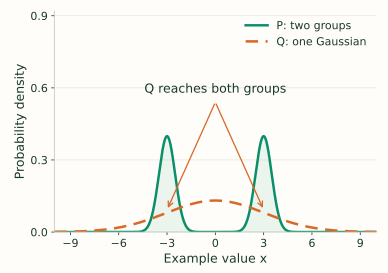
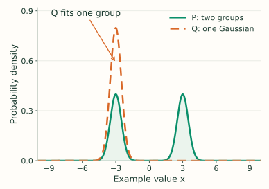

Forward KL versus Reverse KL
The direction of KL changes the question being asked.
- Forward KL, $D_{KL}(P\|Q)$: real data comes from $P$, and the model uses $Q$. Does the model give enough probability to everything that really happens?
- Reverse KL, $D_{KL}(Q\|P)$: the model generates from $Q$. Do the model's generated samples land in places that are likely under $P$?
Forward KL: Cover the Real Data
Forward KL gives a large penalty when real data appears somewhere but the model gives that region almost zero probability. So if the real data has two well-separated clusters and the model can only use one bell curve, it tends to spread out to cover both.
Reverse KL: Stay in a Plausible Region
Reverse KL only averages over samples the model itself generates. If the model never generates samples near one real cluster, it may not pay much penalty for missing that cluster. So with two real clusters and a simple one-cluster model, reverse KL may choose one cluster and fit it tightly.
Concrete Picture
Imagine real customer spending has two groups: budget customers around 20, and premium customers around 200. A one-bell-curve model cannot represent both groups perfectly.
- Forward KL tends to use a wide curve that covers both 20 and 200, because missing either real group is costly.
- Reverse KL may focus on one group, because generating realistic samples from one cluster can be better than spreading into the low-density middle.
The figure draws the same two-group idea using example positions $-3$ and $+3$. We choose these positions to make the picture simple. Each group contains half the probability, and each has standard deviation $0.5$. The model $Q$ is restricted to one Gaussian bell curve.
Here $\mathcal N(x;\mu,v)$ means a Gaussian density at $x$, with mean $\mu$ and variance $v$. The green curve is:
$$\begin{aligned} P(x)&=\tfrac12\mathcal N(x;-3,0.25)\\ &\quad+\tfrac12\mathcal N(x;3,0.25). \end{aligned}$$In the formulas below, $\mathbb E_{x\sim P}$ means average over samples drawn from $P$; $\mathbb E_{x\sim Q}$ means average over samples drawn from $Q$. $P(x)$ and $Q(x)$ are the curves' density heights.
Forward KL: cover both groups
$$D_{KL}(P\|Q)=\mathbb E_{x\sim P}\!\left[\log_2\frac{P(x)}{Q(x)}\right].$$
Where the average looks: both green peaks, because both generate real data. A narrow model at just one peak would give the other group's data extremely low probability.
The compromise: $Q$ spreads across both groups, but also puts probability in the quiet middle. The forward-optimal Gaussian here has mean 0 and variance 9.25, matching $P$'s mean and variance.
Reverse KL: fit one group
$$D_{KL}(Q\|P)=\mathbb E_{x\sim Q}\!\left[\log_2\frac{Q(x)}{P(x)}\right].$$
Where the average looks: mainly the left peak, where this $Q$ generates samples. Making $Q$ broad would send many samples into the middle, where $P$ is tiny.
The compromise: $Q$ fits one group closely and mostly misses the other. The illustrated model has mean $-3$ and variance $0.25$; choosing the right peak gives the same loss by symmetry.
Both plots use the same axes. The narrow orange peak is taller because it holds all of $Q$'s probability, while each green peak holds only half of $P$'s. Missing a group still leaves a positive reverse KL; it is not a perfect match.
These behaviors arise because one bell curve cannot reproduce two separated peaks. If $Q$ can represent $P$ exactly, both directions are minimized by $Q=P$. The mode-covering and mode-seeking comparison also appears in Stanford's variational-inference tutorial.
Neither direction is always better. Forward KL is safer when missing real possibilities is bad. Reverse KL is useful when generating sharp plausible samples matters more than covering every mode.
Where It Appears
- Maximum likelihood and cross-entropy: often behaves like minimizing forward KL from data to model.
- Variational inference: common ELBO derivations use reverse KL, which can focus on one high-probability region.
- Policy optimization: KL penalties constrain how far a new policy moves from an old policy.